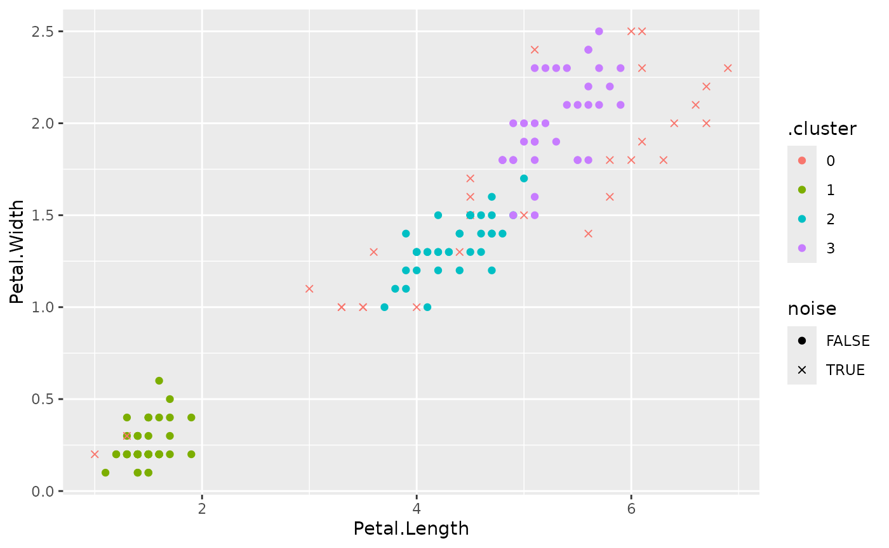

The dbscan package provides tidy(),
augment(), and glance() methods for its
clustering algorithms, making them easy to use with tidyverse, ggplot2,
and tidymodels.
Load the packages and prepare the numeric variables from the iris data:
Get cluster statistics as a tibble:
tidy(db)
#> # A tibble: 4 × 3
#> cluster size noise
#> <fct> <int> <lgl>
#> 1 0 29 TRUE
#> 2 1 48 FALSE
#> 3 2 37 FALSE
#> 4 3 36 FALSEVisualize the clustering with ggplot2, using an x for noise points:
augment(db, x) %>%
ggplot(aes(x = Petal.Length, y = Petal.Width)) +
geom_point(aes(color = .cluster, shape = noise)) +
scale_shape_manual(values = c(19, 4))